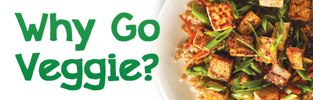
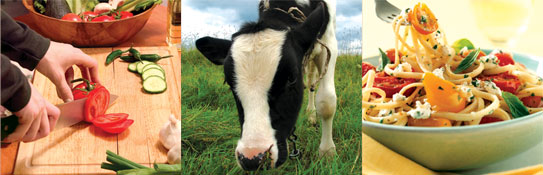

The single most important thing an individual can do for their health, for the environment, and for the sake of the innocent animals is to adopt a vegetarian diet.

1. Reduce risk of the No. 1 killer – Heart Disease.
Vegetarian diets tend to be naturally lower in saturated fat and cholesterol and have a higher intake of plant nutrients than most meat-based diets.1 Vegetarians have been shown to have a 24% lower risk of dying of heart disease than non-vegetarians.2 Furthermore, world-renowned physician Dr. Dean Ornish found that patients on a low-fat vegetarian diet actually reversed coronary heart disease.3
2. Cancer prevention.
Regularly consuming a diet that contains fruits and vegetables is strongly associated with a reduced risk of some cancers. There is evidence that vegetarians tend to have a lower overall rate of cancer compared to the general population. “Red meat and processed meat consumption is consistently associated with an increase in the risk of colorectal cancer.”4 Reducing your risk of cancer is a great reason to eat your fruits and veggies!
3. Lose excess weight and keep it off.
On average, vegetarians tend to have a lower body mass index (a measure of body fat) than meat eaters. More than two-thirds (68.8%) of the general public are obese5. The Oxford Vegetarian Study found that BMI levels are lower in vegetarians of all age groups and for both men and women6
Vegetarians may have lower BMI due to consumption of a diet that is high in fiber-rich and low-energy foods such as fruits and vegetables
4. Live longer, slow the aging process.
A 12-year Oxford study published in the British Medical Journal found that vegetarians outlive meat eaters by six years.7 Plant-based diets are generally rich in fiber, phytonutrients, antioxidants, vitamins and minerals, which in turn strengthens the immune system and slows down the aging process. Additionally, a vegetarian diet can prevent and reverse certain chronic diseases so it makes sense that vegetarians have a longer life span!
5. Avoid toxic food contaminants.
Flesh foods can harbor contaminants such as hormones, herbicides and pesticides, and antibiotics. As these toxins are all fat-soluble, they concentrate in the fatty flesh of the animals. Not to mention the viruses, bacteria and parasites such as salmonella, trichinella and other worms, and toxoplasmosis parasites.
6. Reduce Global Warming.
The United Nations said in its 2006 report that livestock generate more greenhouse gases than all the cars and trucks in the world combined.8 Most of it comes from carbon dioxide and nitrous oxide gases generated by manure. Therefore, the single most important step an individual can take to reduce global warming is to adopt a vegetarian diet.
7. It Makes Economic Sense.
A vegetarian diet is not only good for one’s personal health; it’s also good for the nation’s economy. Five diet-related chronic diseases cost the U.S. economy a staggering $1 trillion each year!9 This is an estimate of direct medical costs and the indirect impact of productivity losses due to illness and premature death associated with chronic heart disease and stroke, obesity, cancer, diabetes, and osteoporosis. According to an annual estimate by Fidelity Investments, which has been tracking healthcare costs for decades, the average couple retiring in 2016 at age 65 will need $260,000 to cover medical costs in retirement. This holds whether the couple has bought Medicare supplemental insurance or not, Fidelity says.10 Diet-related diseases are costly and preventable, so the message is clear. Eat healthier now or pay later for increased health care costs.
8. Help end world hunger.
Every 3.6 seconds a person dies from starvation, unfortunately children under the age of 5 are most often the victims.11 On average, 40% of global grain production is used to feed livestock, although in richer countries the proportion of grain used for animal feed is around 70%12 13 “If all food crops grown globally were fed directly to humans instead of animals, around 70% more food would be added to the world’s supply, which would be enough to feed 4 billion additional people.14 Rather than cycle crops through livestock, that sudden surplus alone would be enough food to feed over half the humans on earth, let alone the 795 million who face hunger every day.”15
9. Have compassion for animals.
Animals on today's factory farms have no legal protection from cruelty that would be illegal if it were inflicted on dogs or cats. Yet farmed animals are no less intelligent or capable of feeling pain than are the dogs and cats we cherish as companions. A vegetarian lifestyle awakens our spirit of compassion and guides us towards a kinder, gentler society in which we exercise a moral choice to protect animals—not exploit them.
10. Enjoy the diverse, colorful, and delicious world of vegetarian cuisine.
Vegetarian meals can be tasty, fast, and easy. Plus, you can make any of your favorite non-vegetarian dishes by substituting with ready-made meat alternatives. There are lots of vegetarian cook books available as well. The Down to Earth all-vegetarian Deli is perfect when you don’t have time to cook but don’t want to compromise on taste and quality.
